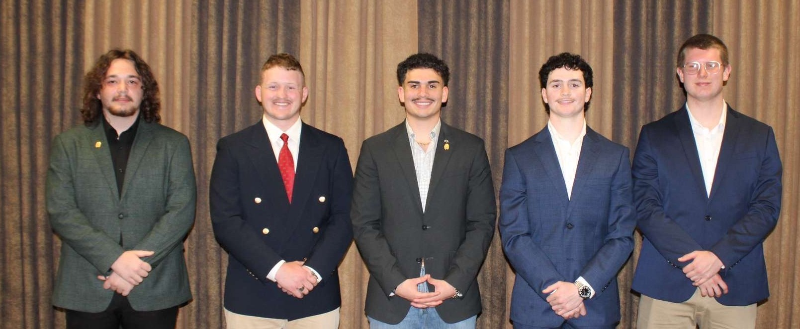

Current Executive
Committee

"I'm the founding father and current president of the Phi-Gamma chapterr, where I helped lead and
support my brothers. I'm a Christian who values faith, dicipline, and integrity in everything I do.
I'm also a combat veteran who served in OEF campaign in the Hort of Africa. Right now, I'm a
sophomore majoring in chriminal justice with a goal to serve my community. I stay focused on growth
and try to lead by example every day."
- Johnathan Gonzalez
"My name is Zackery Faustner and I am the current GP of the Phi-Gamma Chapter of Kappa Sigma.
I am 21 years old and from Cache, Oklahoma. I am a founding father of the chapter, and I
pledged in fall of 2022. I major in history and am a junior."
- Zack Faustner
" Joining this fraternity was a blessing in disguise to say the least.
The people I have met along the way and the the learning tool I
have access to are nest to priceless. I enjoy spending time with my
guys as we network and grow as young men. All together, my time and
mission in Kappa Sigma has prepared me to achieve my goals for the future. "
- Aiden Chambers
"My name is Dominic Mann and I'm a from Lawton, OK. I gratuated from MacArthur High School
now plan to get my degree in Journalism and Media Production in hopes of becoming a film maker
one day. Outside of academics, I participate in Speech and Debate here at Cameron, and serve as
the Grandmaster of Ceremonies fro the Phi-Gamma Chapter. I'm glad that I've been able be gifted
with so many friends here at this chapter and learn what it takes to be a leader"
- Dominic Mann
" "
- Lane Casell